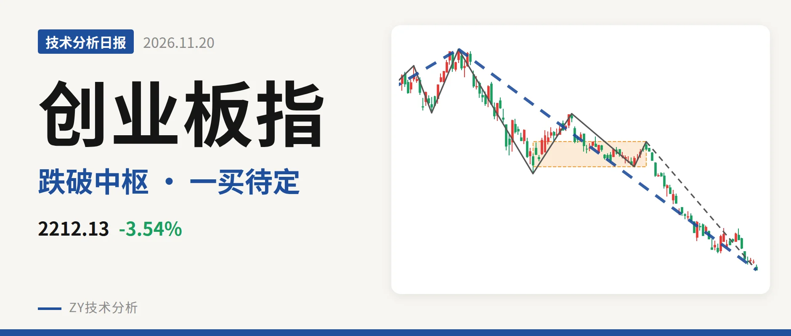
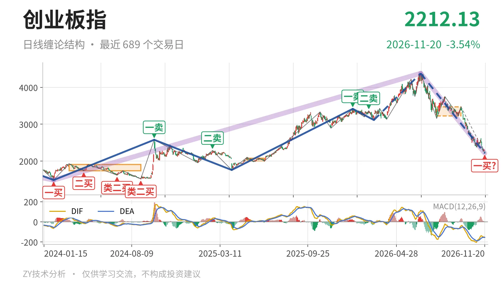
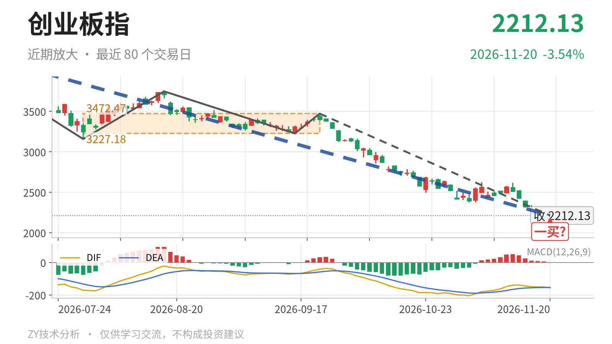

创业板指｜失守3227点，2212.13点暂成一买

最近日线中枢 3227.18—3472.47点，收盘位于中枢之下
一句话：今日跌破3227点，日线一买暂定在2212.13点。
📉 走势结构：大级别冲高回落，日线下跌段未结束
当前日线结构处于6月25日以来的下跌段中，该下跌线段还在延续，内已含5笔。更大级别上，2024年2月5日以来的上涨结构没有结束，但6月25日以来的下跌走势也没有结束，回落已跌49.5%，价格从4380.41点回到2212.13点，深入2022年线段中枢。当前日线DIF在零轴下方，DIF -155.7，DEA -154.2，短线不是上涨段，而是大级别上涨后的深幅回落。

🎯 中枢与位置：跌破日线中枢，回到更大级别中枢内
最新收盘2212.13点，低于最近日线笔中枢下沿3227.18点约31.5%。该中枢为7月30日至9月22日的3227.18—3472.47点区间，还没有完成。日线笔中枢此前从1996.96—2076.91点上移到3227.18—3472.47点，如今价格大幅跌破下沿，上移结构被破坏。更大级别线段中枢方面，2212.13点落在2022年4月27日至2023年8月4日的2122.32—2282.65点区间内，略高于中轴2202.48点。价格没有完全脱离更大级别中枢，中枢未形成单边下移。
🧭 买卖点：暂定一买出现，旧卖点已降级
日线笔级别上，11月20日暂定的一买在2212.13点，所在9月22日至11月20日下跌笔还在延续，38根K线尚未走完，所以这只是暂定一买，会随这一笔的延续而变化。此前1月13日一卖3416.84点、2月25日二卖3363.18点，都因3月9日至6月25日创出4380.41点新高而降为较小级别。线段级别3月9日三买3111.88点，已被6月25日以来的回落跌穿，不能再当线段级别三买。

⚡ 背驰：价格新低，面积未同步放大
背驰只看最新一笔。9月22日至11月20日下跌笔与6月25日至7月30日下跌笔相比，价格从3158.14点继续下探至2212.13点，创出新低；绿柱面积由1837收窄至1110，DIF低点却由-171.1降到-204.5。这是价格新低、DIF新低，只有绿柱面积未同步放大，不是标准的“新低不新弱”。最新下跌笔还在延续，最终面积仍有变化，背驰判断要等这段走势结束。
🔎 关键位置：反抽不上3227点则偏弱
结构上，上方最近压力看3227点附近，即7月30日至9月22日日线中枢下沿。反抽若回不到3227点上方，日线笔级别的三卖风险不解除。下方先看2122点附近，即2022年线段中枢下沿，当前价格仍在该中枢内。重新站上2283点附近，这轮下跌更可能只是更大级别中枢扩展；若跌破2122点，则要下探2015年线段中枢下沿1841点附近。整体判断：日线级别偏弱，弱在跌破3227点且尚未收回，更大级别仍属中枢震荡。
⚠️ 本文为基于公开行情数据的缠论技术结构记录，由程序自动计算并生成，仅供学习交流，不构成任何投资建议。市场有风险，投资需谨慎。